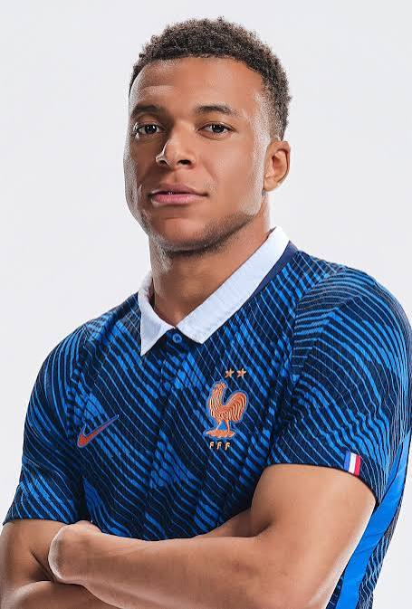

Kylian Mbappé Lottin est né le 20 décembre 1998 dans le 19e arrondissement de Paris, en Île-de-France. Il est issu d'une famille de sportifs. Son père, Wilfrid Mbappé Lottin, né à Douala au Cameroun de parents duala, est un ancien footballeur de niveau régional devenu entraîneur des moins de 15 ans à l'Association sportive de Bondy (banlieue nord-est parisienne).

Kylian Mbappé a grandi à Bondy en banlieue parisienne. Il commence sa carrière professionnelle en 2015 à l’AS Monaco où il démontre sa précocité et remporte la Ligue 1 2016-2017. À l’issue de cette saison, il rejoint le Paris Saint-Germain, sous forme de prêt.En 2017, il fait ses débuts en équipe de France A, à l’âge de 18 ans. Lors de la Coupe du monde 2018 en Russie, il devient le deuxième plus jeune joueur après le Brésilien Pelé à inscrire un doublé en phase finale.